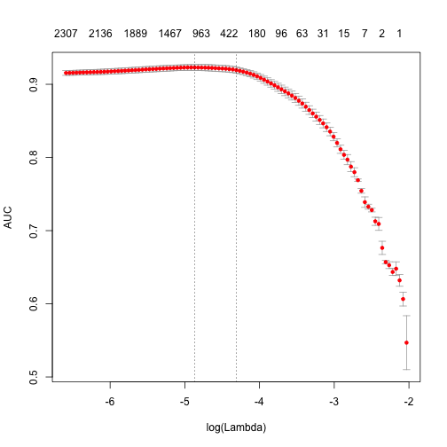
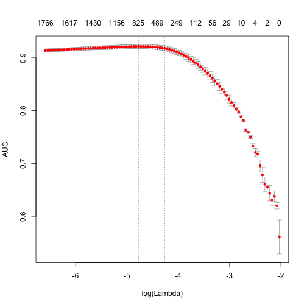
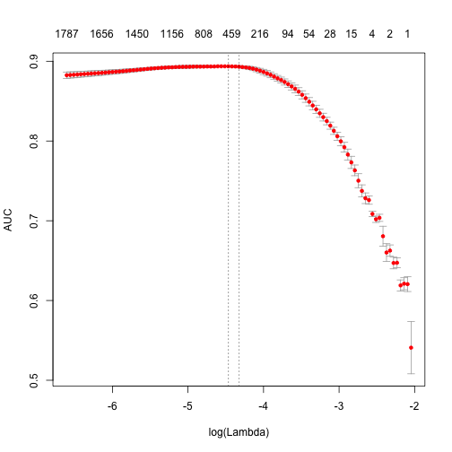
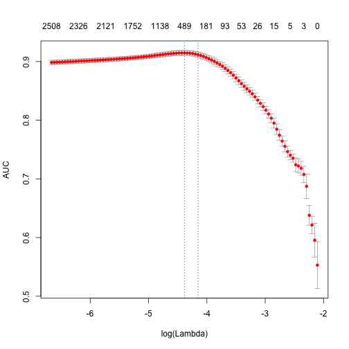

Introducing text2vec 0.4
Today I’m pleased to announce new major release of text2vec - text2vec 0.4 which is already on CRAN.
For those readers who is not familiar with text2vec - it is an R package which provides an efficient framework with a concise API for text analysis and natural language processing.
With this release I also launched project homepage - http://text2vec.org where you can find up-to-date documents and tutorials.
Functionality
The core functionality at the moment includes:
- Fast text vectorization (creation of document-term matrices) on arbitrary n-grams, using vocabulary or feature hashing
- GloVe word embeddings
- Topic modeling with:
- Latent Dirichlet Allocation
- Latent Sematic Analysis
- Similarities/distances between matrices (documents in vector space)
- Cosine
- Jaccard
- Relaxed Word Mover’s Distance
- Euclidean
What’s new?
First of all, I would like to express special thanks to project contributors - Lincoln Mullen, Qin Wenfeng, Zach Mayer and others (and of course for all of those who reported bugs on the issue tracker!).
A lot of work was done in the last 6 months. Most notable changes are:
- Immutable iterators. Most frustrating and annoying thing in 0.3 was that
create_*functions modified input objects (in contrast to usual R behavior with copy-on-modify semantics). So I received a lot of bug reports on that. People just didn’t understand why they getting empty Document-Term matrices. That was my big mistake, R users assume that function can’t modify argument. So I rewrote iterators withR6classes (thanks to @hadley for suggestion). Learned a lot. - Now text2vec have consistent pipe-friendly interface for models. User should remember few main verbs -
fit,transform,fit_transform. More details will be available soon in a separate blog post. Stay tuned. - Started to work on models which can be useful for NLP:
- Latent Dirichlet Allocation. Code for fast Collapsed Gibbs Sampling is based on lda package by Jonathan Chang, but with a few tweaks (which will be incorporated into
ldapackage in next release). It happened that LDA from text2vec ~ 2x faster that original (and ~10x faster than topicmodels!) - Latent Semantic Analysis (based on updated irlba package)
- Tf-Idf is also rewritten to be consistent with other models interface
- Latent Dirichlet Allocation. Code for fast Collapsed Gibbs Sampling is based on lda package by Jonathan Chang, but with a few tweaks (which will be incorporated into
- Now text2vec contains functions for fast calculation of similarity between documents (actually similarities and distances between matrices):
- GloVe word embeddings also significantly updated:
- Even faster now - got ~2-3x performance boost from code optimizations and usage of single precision
floatarithmetic (don’t forget to enable-ffast-mathoption for your C++ compiler) L1regularization - our new feature (I didn’t see implementations our papers where researchers tried to add regularization). Higher quality word embedding for small data sets. More details will be available in separate blog post. Stay tuned
- Even faster now - got ~2-3x performance boost from code optimizations and usage of single precision
Updated tutorials
Check out tutorials on text2vec.org where I’ll be updating documentation on a regular basis.
Below is the updated introduction to text mining with text2vec. No fancy word clouds. No Jane Austen. Enjoy.
Text analysis pipeline
Most text mining and NLP modeling use bag of words or bag of n-grams methods. Despite their simplicity, these models usually demonstrate good performance on text categorization and classification tasks. But in contrast to their theoretical simplicity and practical efficiency building bag-of-words models involves technical challenges. This is especially the case in R because of its copy-on-modify semantics.
Let’s briefly review some of the steps in a typical text analysis pipeline:
- The researcher usually begins by constructing a document-term matrix (DTM) or term-co-occurrence matrix (TCM) from input documents. In other words, the first step is to vectorize text by creating a map from words or n-grams to a vector space.
- The researcher fits a model to that DTM. These models might include text classification, topic modeling, similarity search, etc. Fitting the model will include tuning and validating the model.
- Finally the researcher applies the model to new data.
In this vignette we will primarily discuss the first step. Texts themselves can take up a lot of memory, but vectorized texts usually do not, because they are stored as sparse matrices. Because of R’s copy-on-modify semantics, it is not easy to iteratively grow a DTM. Thus constructing a DTM, even for a small collections of documents, can be a serious bottleneck for analysts and researchers. It involves reading the whole collection of text documents into RAM and processing it as single vector, which can easily increase memory use by a factor of 2 to 4. The text2vec package solves this problem by providing a better way of constructing a document-term matrix.
Let’s demonstrate package core functionality by applying it to a real case problem - sentiment analysis.
text2vec package provides the movie_review dataset. It consists of 5000 movie reviews, each of which is marked as positive or negative. We will also use the data.table package for data wrangling.
First of all let’s split out dataset into two parts - train and test. We will show how to perform data manipulations on train set and then apply exactly the same manipulations on the test set:
library(text2vec)
library(data.table)
data("movie_review")
setDT(movie_review)
setkey(movie_review, id)
set.seed(2016L)
all_ids = movie_review$id
train_ids = sample(all_ids, 4000)
test_ids = setdiff(all_ids, train_ids)
train = movie_review[J(train_ids)]
test = movie_review[J(test_ids)]
Vectorization
To represent documents in vector space, we first have to create mappings from terms to term IDS. We call them terms instead of words because they can be arbitrary n-grams not just single words. We represent a set of documents as a sparse matrix, where each row corresponds to a document and each column corresponds to a term. This can be done in 2 ways: using the vocabulary itself or by feature hashing.
Vocabulary-based vectorization
Let’s first create a vocabulary-based DTM. Here we collect unique terms from all documents and mark each of them with a unique ID using the create_vocabulary() function. We use an iterator to create the vocabulary.
# define preprocessing function and tokenization fucntion
prep_fun = tolower
tok_fun = word_tokenizer
it_train = itoken(train$review,
preprocessor = prep_fun,
tokenizer = tok_fun,
ids = train$id,
progressbar = FALSE)
vocab = create_vocabulary(it_train)
What was done here?
- We created an iterator over tokens with the
itoken()function. All functions prefixed withcreate_work with these iterators. R users might find this idiom unusual, but the iterator abstraction allows us to hide most of details about input and to process data in memory-friendly chunks. - We built the vocabulary with the
create_vocabulary()function.
Alternatively, we could create list of tokens and reuse it in further steps. Each element of the list should represent a document, and each element should be a character vector of tokens.
train_tokens = train$review %>%
prep_fun %>%
tok_fun
it_train = itoken(train_tokens,
ids = train$id,
# turn off progressbar because it won't look nice in rmd
progressbar = FALSE)
vocab = create_vocabulary(it_train)
vocab
Number of docs: 4000
0 stopwords: ...
ngram_min = 1; ngram_max = 1
Vocabulary:
terms terms_counts doc_counts
1: overturned 1 1
2: disintegration 1 1
3: vachon 1 1
4: interfered 1 1
5: michonoku 1 1
---
35592: penises 2 2
35593: arabian 1 1
35594: personal 102 94
35595: end 921 743
35596: address 10 10
Note that text2vec provides a few tokenizer functions (see ?tokenizers). These are just simple wrappers for the base::gsub() function and are not very fast or flexible. If you need something smarter or faster you can use the tokenizers package which will cover most use cases, or write your own tokenizer using the stringi package.
Now that we have a vocabulary, we can construct a document-term matrix.
vectorizer = vocab_vectorizer(vocab)
t1 = Sys.time()
dtm_train = create_dtm(it_train, vectorizer)
print(difftime(Sys.time(), t1, units = 'sec'))
Time difference of 0.800817 secs
Now we have a DTM and can check its dimensions.
dim(dtm_train)
[1] 4000 35596
identical(rownames(dtm_train), train$id)
[1] TRUE
As you can see, the DTM has rows, equal to the number of documents, and columns, equal to the number of unique terms.
Now we are ready to fit our first model. Here we will use the glmnet package to fit a logistic regression model with an L1 penalty and 4 fold cross-validation.
library(glmnet)
NFOLDS = 4
t1 = Sys.time()
glmnet_classifier = cv.glmnet(x = dtm_train, y = train[['sentiment']],
family = 'binomial',
# L1 penalty
alpha = 1,
# interested in the area under ROC curve
type.measure = "auc",
# 5-fold cross-validation
nfolds = NFOLDS,
# high value is less accurate, but has faster training
thresh = 1e-3,
# again lower number of iterations for faster training
maxit = 1e3)
print(difftime(Sys.time(), t1, units = 'sec'))
Time difference of 3.485586 secs
plot(glmnet_classifier)

print(paste("max AUC =", round(max(glmnet_classifier$cvm), 4)))
[1] "max AUC = 0.923"
We have successfully fit a model to our DTM. Now we can check the model’s performance on test data.
Note that we use exactly the same functions from prepossessing and tokenization. Also we reuse/use the same vectorizer - function which maps terms to indices.
# Note that most text2vec functions are pipe friendly!
it_test = test$review %>%
prep_fun %>%
tok_fun %>%
itoken(ids = test$id,
# turn off progressbar because it won't look nice in rmd
progressbar = FALSE)
dtm_test = create_dtm(it_test, vectorizer)
preds = predict(glmnet_classifier, dtm_test, type = 'response')[,1]
glmnet:::auc(test$sentiment, preds)
[1] 0.916697
As we can see, performance on the test data is roughly the same as we expect from cross-validation.
Pruning vocabulary
We can note, however, that the training time for our model was quite high. We can reduce it and also significantly improve accuracy by pruning the vocabulary.
For example, we can find words “a”, “the”, “in”, “I”, “you”, “on”, etc in almost all documents, but they do not provide much useful information. Usually such words are called stop words. On the other hand, the corpus also contains very uncommon terms, which are contained in only a few documents. These terms are also useless, because we don’t have sufficient statistics for them. Here we will remove pre-defined stopwords, very common and very unusual terms.
stop_words = c("i", "me", "my", "myself", "we", "our", "ours", "ourselves", "you", "your", "yours")
t1 = Sys.time()
vocab = create_vocabulary(it_train, stopwords = stop_words)
print(difftime(Sys.time(), t1, units = 'sec'))
Time difference of 0.439589 secs
pruned_vocab = prune_vocabulary(vocab,
term_count_min = 10,
doc_proportion_max = 0.5,
doc_proportion_min = 0.001)
vectorizer = vocab_vectorizer(pruned_vocab)
# create dtm_train with new pruned vocabulary vectorizer
t1 = Sys.time()
dtm_train = create_dtm(it_train, vectorizer)
print(difftime(Sys.time(), t1, units = 'sec'))
Time difference of 0.6738439 secs
dim(dtm_train)
[1] 4000 6585
Note that the new DTM has many fewer columns than the original DTM. This usually leads to both accuracy improvement (because we removed “noise”) and reduction of the training time.
Also we need to create DTM for test data with the same vectorizer:
dtm_test = create_dtm(it_test, vectorizer)
dim(dtm_test)
[1] 1000 6585
N-grams
Can we improve the model? Definitely - we can use n-grams instead of words. Here we will use up to 2-grams:
t1 = Sys.time()
vocab = create_vocabulary(it_train, ngram = c(1L, 2L))
print(difftime(Sys.time(), t1, units = 'sec'))
Time difference of 1.47972 secs
vocab = vocab %>% prune_vocabulary(term_count_min = 10,
doc_proportion_max = 0.5)
bigram_vectorizer = vocab_vectorizer(vocab)
dtm_train = create_dtm(it_train, bigram_vectorizer)
t1 = Sys.time()
glmnet_classifier = cv.glmnet(x = dtm_train, y = train[['sentiment']],
family = 'binomial',
alpha = 1,
type.measure = "auc",
nfolds = NFOLDS,
thresh = 1e-3,
maxit = 1e3)
print(difftime(Sys.time(), t1, units = 'sec'))
Time difference of 2.973802 secs
plot(glmnet_classifier)

print(paste("max AUC =", round(max(glmnet_classifier$cvm), 4)))
[1] "max AUC = 0.9217"
Seems that usage of n-grams improved our model a little bit more. Let’s check performance on test dataset:
# apply vectorizer
dtm_test = create_dtm(it_test, bigram_vectorizer)
preds = predict(glmnet_classifier, dtm_test, type = 'response')[,1]
glmnet:::auc(test$sentiment, preds)
[1] 0.9268974
Further tuning is left up to the reader.
Feature hashing
If you are not familiar with feature hashing (the so-called “hashing trick”) I recommend you start with the Wikipedia article, then read the original paper by a Yahoo! research team. This technique is very fast because we don’t have to perform a lookup over an associative array. Another benefit is that it leads to a very low memory footprint, since we can map an arbitrary number of features into much more compact space. This method was popularized by Yahoo! and is widely used in Vowpal Wabbit.
Here is how to use feature hashing in text2vec.
h_vectorizer = hash_vectorizer(hash_size = 2 ^ 14, ngram = c(1L, 2L))
t1 = Sys.time()
dtm_train = create_dtm(it_train, h_vectorizer)
print(difftime(Sys.time(), t1, units = 'sec'))
Time difference of 1.51502 secs
t1 = Sys.time()
glmnet_classifier = cv.glmnet(x = dtm_train, y = train[['sentiment']],
family = 'binomial',
alpha = 1,
type.measure = "auc",
nfolds = 5,
thresh = 1e-3,
maxit = 1e3)
print(difftime(Sys.time(), t1, units = 'sec'))
Time difference of 4.494137 secs
plot(glmnet_classifier)

print(paste("max AUC =", round(max(glmnet_classifier$cvm), 4)))
[1] "max AUC = 0.8937"
dtm_test = create_dtm(it_test, h_vectorizer)
preds = predict(glmnet_classifier, dtm_test , type = 'response')[, 1]
glmnet:::auc(test$sentiment, preds)
[1] 0.9036685
As you can see our AUC is a bit worse but DTM construction time is considerably lower. On large collections of documents this can be a significant advantage.
Basic transformations
Before doing analysis it usually can be useful to transform DTM. For example lengths of the documents in collection can significantly vary. In this case it can be useful to apply normalization.
Normalization
By “normalization” we assume transformation of the rows of DTM so we adjust values measured on different scales to a notionally common scale. For the case when length of the documents vary we can apply “L1” normalization. It means we will transform rows in a way that sum of the row values will be equal to 1:
dtm_train_l1_norm = normalize(dtm_train, "l1")
By this transformation we should improve the quality of data preparation.
TF-IDF
Another popular technique is TF-IDF transformation. We can (and usually should) apply it to our DTM. It will not only normalize DTM, but also increase the weight of terms which are specific to a single document or handful of documents and decrease the weight for terms used in most documents:
vocab = create_vocabulary(it_train)
vectorizer = vocab_vectorizer(vocab)
dtm_train = create_dtm(it_train, vectorizer)
# define tfidf model
tfidf = TfIdf$new()
# fit model to train data and transform train data with fitted model
dtm_train_tfidf = fit_transform(dtm_train, tfidf)
# tfidf modified by fit_transform() call!
# apply pre-trained tf-idf transformation to test data
dtm_test_tfidf = create_dtm(it_test, vectorizer) %>%
transform(tfidf)
Note that here we first time touched model object in text2vec. At this moment the user should remember several important things about text2vec models:
- Models can be fitted on a given data (train) and applied to unseen data (test)
- Models are mutable - once you will pass model to
fit()orfit_transform()function, model will be modifed by it. - After model is fitted, it can be applied to a new data with
transform(new_data, fitted_model)method.
More detailed overview of models and models API will be available soon in a separate vignette.
Once we have tf-idf reweighted DTM we can fit our linear classifier again:
t1 = Sys.time()
glmnet_classifier = cv.glmnet(x = dtm_train_tfidf, y = train[['sentiment']],
family = 'binomial',
alpha = 1,
type.measure = "auc",
nfolds = NFOLDS,
thresh = 1e-3,
maxit = 1e3)
print(difftime(Sys.time(), t1, units = 'sec'))
Time difference of 3.033687 secs
plot(glmnet_classifier)

print(paste("max AUC =", round(max(glmnet_classifier$cvm), 4)))
[1] "max AUC = 0.9146"
Let’s check the model performance on the test dataset:
preds = predict(glmnet_classifier, dtm_test_tfidf, type = 'response')[,1]
glmnet:::auc(test$sentiment, preds)
[1] 0.9053246
Usually tf-idf transformation significantly improve performance on most of the dowstream tasks.
What’s next
Try text2vec, share your thoughts in comments. I’m waiting for feedback.